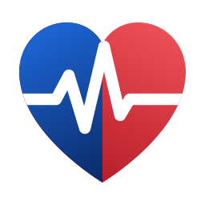

Dossier : CC-000184
Destinataire : Dr Noël, médecin traitant
Compte rendu de consultation de cardiologie
Motif : suivi d'une insuffisance cardiaque à FE réduite d'origine ischémique.
Clinique : NYHA II stable. TA 128/78 mmHg, FC 66 bpm, SpO₂ 97 %, poids 82,1 kg (−0,5 kg). Pas de signe congestif. Auscultation : non renseignée.
ECG : rythme sinusal 66 bpm, PR 180 ms, QRS 104 ms, QTc 443 ms (Fridericia).
ETT (09/2026) : FEVG 47 % (Simpson biplan), en amélioration (32 % en 03/2024).
Biologie (21/11/2026) : NT-proBNP 590 pg/mL, DFG 54 mL/min/1,73 m², K⁺ 4,9 mmol/L.
Scores : CHA₂DS₂-VA 3 (référentiel v2024, calculé) ; HAS-BLED 2 (calculé).
Conclusion : évolution favorable sous traitement optimisé, FEVG modérément réduite.
Conduite à tenir : poursuite du traitement, contrôle kaliémie et créatinine à 1 mois, ETT de contrôle dans 6 mois. Prochaine consultation en février 2027.
Bien confraternellement,